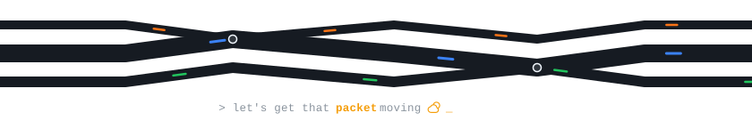

Before moving into networking, I learned how to repair dead laptop motherboards in Kathmandu with a multimeter, a soldering iron, and board schematics. Tracing power across circuits taught me to find where things actually fail instead of guessing, and that is still how I approach networks and software today.
|
from the notebook plain-English notes & labs · rajkumarneupane.com/docs
|
things I built small tools made for real problems
|
